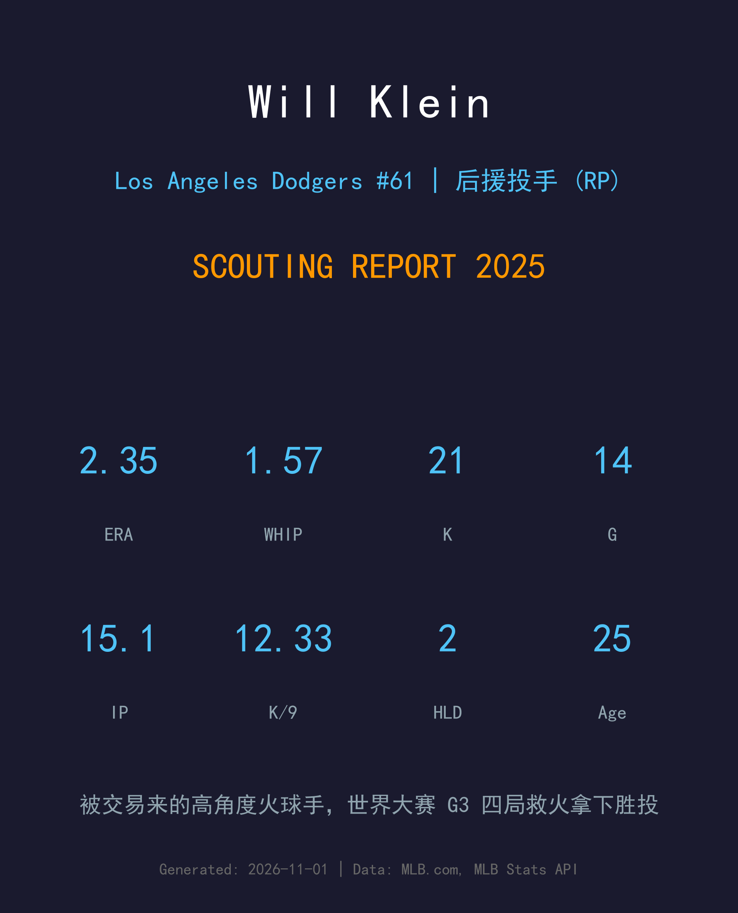
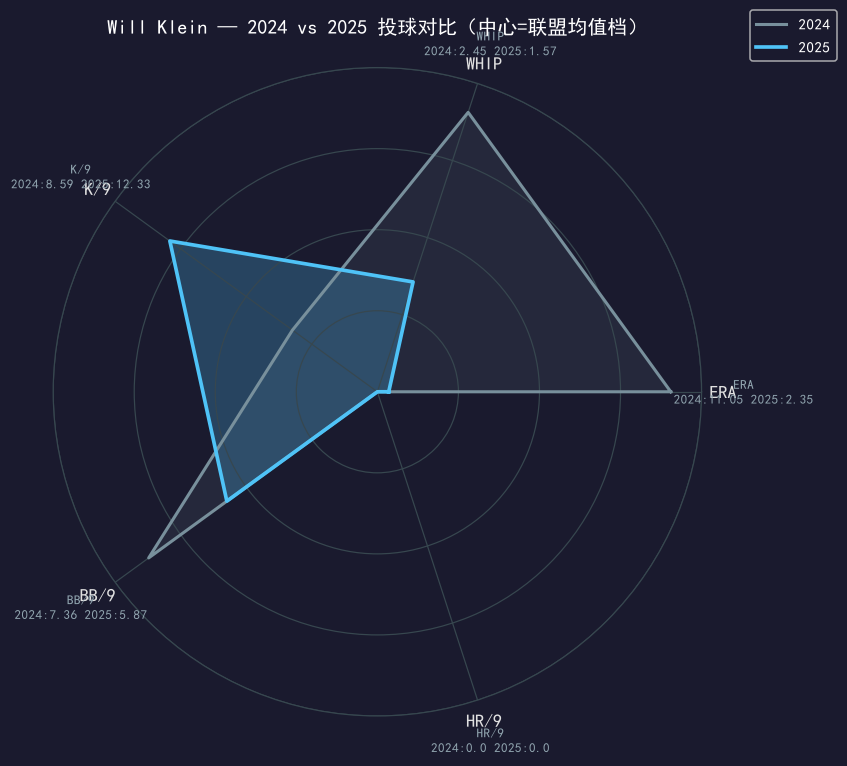
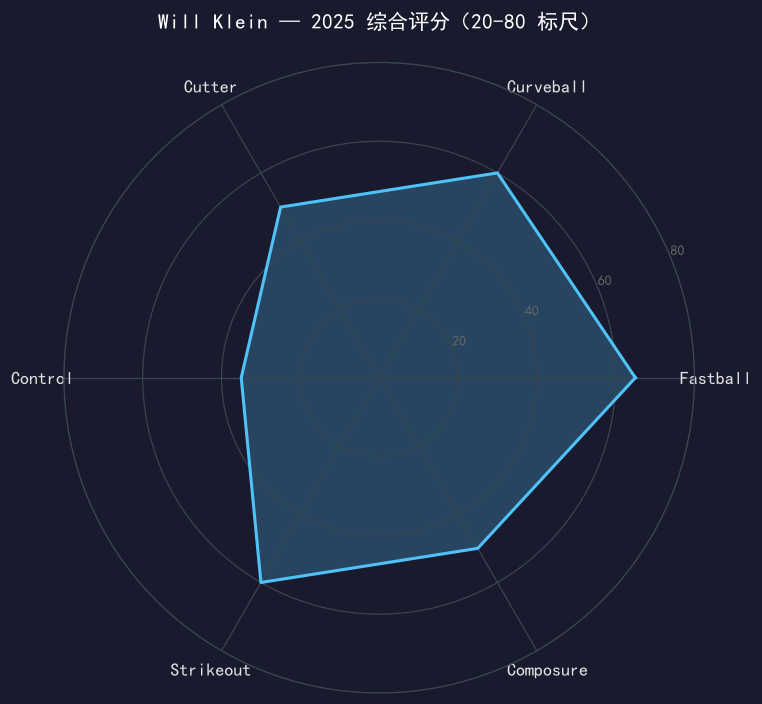

Los Angeles Dodgers #61 | 后援投手 | 右投 | 被交易来的高角度火球手，世界大赛 G3 四局救火拿下胜投

2025 年 6 月 2 日，道奇用水手不需要的左投 Joe Jacques 换来了 Will Klein——一笔当时无人注意的小交易。五个月后，这笔交易在世界大赛第三场兑现：Klein 在道奇 6-5 击败蓝鸟的经典战役里吃下 4 局零失分、5 次三振，拿下世界大赛胜投。
他的常规赛是一组矛盾的组合：14 场、自责分率 2.35 非常漂亮，但 WHIP 1.57 揭示了他每一次登板都在钢丝绳上跳舞——15.1 局里挤出 14 支安打和 10 次保送，靠 12.33 的 K/9 和 0 支全垒打硬生生把危机一个个灭掉。这是「火球+曲球」型年轻后援的典型形状：球威足以逃过任何jam，但 jam 本来就是自己制造的。
从 2025 年 11 月的视角看，25 岁的 Klein 用半年完成了从 11.05 自责分率的新人到世界大赛胜投投手的跨越。他的 97.9 mph 四缝线和那 4 局世界大赛高光已经写进档案；接下来要证明的是，他能不能把 WHIP 也降下来，让教练组在比分接近时也敢用他。
4 月 28 日在堪萨斯皇家登上大联盟，新人年 8 场出赛、自责分率 11.05——一段几乎要被放弃的开场，却成了后来故事的反差底色。
6 月 2 日被西雅图交易到道奇（换来左投 Joe Jacques），在洛杉矶投出 14 场 2.35 自责分率、K/9 12.33——职业生涯的转折点来自一笔无人报道的交易。
世界大赛第三场，在 6-5 力克蓝鸟的比赛中投出 4 局零失分 5 三振，摘下世界大赛胜投——从 11.05 到世界大赛 W，只用了十八个月。
以下为道奇段数据（2025-06-02 自水手交易加盟）：

| 赛季 | G | W-L | ERA | WHIP | IP | SO | BB | K/9 | BB/9 |
|---|---|---|---|---|---|---|---|---|---|
| 2024（皇家·新人年） | 8 | 1-0 | 11.05 | 2.45 | 7.1 | 7 | 6 | 8.59 | 7.36 |
| 2025（道奇） | 14 | 1-1 | 2.35 | 1.57 | 15.1 | 21 | 10 | 12.33 | 5.87 |
这是一张「极端修复」的雷达图：自责分率从 11.05 到 2.35，改善幅度超过 8 分。修复的核心是三振率（8.59→12.33）与全垒打（12 支安打零全垒打）——他的配球找到了「让打者打不好」的开关。但 BB/9 只从 7.36 降到 5.87、WHIP 仍高达 1.57：上垒的人没少太多，只是不再变成失分。对一个 25 岁的后援来说，这是巨大的进步；对一个想成为高杠杆中继的投手来说，这还不够。
2025 赛季真实配球数据（MLB Stats API pitchArsenal）：
绝对主力球种，近六成使用率配上 97.9 mph 均速与理想的垂直进垒角度——这是他能从任何 jam 里逃生的一张底牌。
标志性武器，大曲率的 early-count 夺好球与两好球追杀双料工具；与速球的速差与角度差是他 K/9 12.33 的来源。
细小横移的过渡球种，破坏棒头、内角抢好球，为曲球做铺垫。
零星使用的第四球种，尚在开发中；若完成度提升，武器库将没有明显短板。
2.35 自责分率配 1.57 WHIP 是罕见的组合：它说明 Klein 的每一局都在有人上垒的情况下开工，又用三振把火一个个灭掉（K/9 12.33）且全程没有被轰过任何一支全垒打。这种「逃生能力」在牛棚里是稀缺品——它让教练组在比分接近、局面混乱时多一个选项。但统计学不会永远站在逃生者一边：保送与安打的复利终会在某个赛季找他结账，除非他先把 WHIP 压下来。
那 4 局零失分 5 三振的含金量不止于一场胜投：在世界大赛的聚光灯下，他连续两遍打线没有让任何一名打者站上二垒（仅 2 保送、2 安打），其中包含多次三上三下。这场球证明了两件事：他的体力足以单场吃 4 局（长中继/假先发的价值），他的曲球在最亮的舞台上照样能夺好球。教练组未来设计牛棚时，这两行都会成为他的名字被写进第六局的理由。
2025 年他大联盟与 3A 之间往返了整整五次——这个数字对多数年轻人是挫败，对 Klein 却是功能性的证明：球队需要长局数时他能在 3A 保持状态，需要牛棚臂时他随时报到。对一支争冠球队来说，「可上下且随时能投 3 局」本身就是一种 roster 价值。下一步，是让教练组在没有「长局数需求」时也想起他的名字。

逃生型火球手，世界大赛已验证的长局弹性
B- 级 / 功能型后援（控球决定上限）
道奇 2025 季后赛夺冠之路：外卡 2-0 红人 → NLDS 3-1 费城人 → NLCS 4-0 酿酒人 → 世界大赛 4-3 多伦多蓝鸟。
Klein 的世界大赛之旅只有两场，却场场有名字：第一场在 4-11 落后的垃圾时间投出 1 局零失分——那是他给自己的热身；第三场则投出了道奇季后赛史上都会被记住的 4 局：6-5 力克蓝鸟的比赛中，他在比分僵持时吃下 4 局、仅被敲 2 支安打、送出 5 次三振，拿下世界大赛胜投。大联盟生涯第 22 局，就刻在了世界大赛的记录簿上。
Klein 的 2026 年目标很清晰：把 BB/9 压到 4 以下、WHIP 压到 1.3 以下，让教练组在比分接近的第七局也敢叫他的名字。做到，他就是常规班底；做不到，他会一直是那支「随时能投四局」的功能臂——这也并不坏，但天花板完全不同。
理想剧本：控球改善后进入第六七局常规轮换，偶尔客串长中继
现实基准：3A 与大联盟之间的功能臂，出赛 40+ 场
上行惊喜：复制世界大赛 G3 的形态，成为季后赛球队信任的「隐藏局数」
Will Klein 来自印第安纳大学体系，2020 年选秀进入职业棒球，在堪萨斯皇家的农场里一步步爬升。2024 年 4 月 28 日，他在皇家登上大联盟——但新人年的剧本并不美好：8 场出赛、自责分率 11.05，季末已被移出 40 人名单的讨论圈。
转机来自 2025 年的一次漂泊：他先辗转到了西雅图水手，又在 6 月 2 日被交易到道奇——代价只是一位左投 Joe Jacques。这笔交易当时无人报道，却成了他职业生涯的分水岭：道奇的投手开发部门看中了他的曲球角度与速球进垒点，让他从「被放弃的新人」变成了「世界大赛胜投」。
2025 年 11 月的 Will Klein 手里攥着一枚世界大赛戒指和一份 2.35 自责分率的道奇成绩单。十八个月前他的自责分率还是 11.05；现在，他要用接下来的几个赛季回答一个问题：那 4 局世界大赛高光，是昙花一现，还是一个 25 岁投手真正的起点。